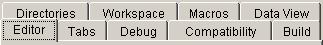
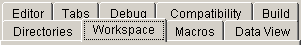
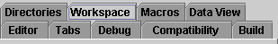
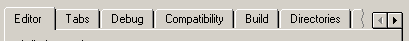

이전의 JTabbedPane 에서는, 모든 탭이 1 행에 들어가지 않는 경우, 복수의 행이 되도록(듯이) 행이 되접어 꺾였습니다. 이러한 표시 방법 대신에,JTabbedPane 에 대체 방식을 제공해, 탭을 단일의 스크롤 가능한 행으로 설정할 수 있도록(듯이) 해 주었으면 한다고 하는 많은 요구가 있었습니다. 이 문서에서는, 1.4 릴리스의 JTabbedPane 로 지원되는, 스크롤 가능한 탭을 제공하는 신규 API 에 대해 설명합니다. 이 변경에 관련하는 버그 추적 리포트: 4093898 .
탭이 복수행에 되접어 꺾이는 경우는, 사용자가 한 번에 모든 탭을 볼 수가 있다고 하는 장점이 있습니다.

다만, 복수행이 되었을 경우의 문제는, 윈도우의 표시 영역에 인접하고 있지 않는 행의 탭을 사용자가 선택했을 때의 처리로 발생합니다. Windows 및 Motif 의 Look & Feel 구현에서는, 이러한 경우에, 선택한 탭을 포함한 행이 윈도우 표시 영역에 인접해 배치되도록(듯이), 행이 바뀝니다.

이 동작에 의해 탭의 배치가 상시 변화해, UI 에 있어서의 선견성이 없어지기 (위해)때문에, 사용자의 감각을 미치게 할 가능성이 있습니다. Motif 의 Look & Feel 에서는, 선택한 탭이 윈도우 표시 영역에 인접하고 있지 않는 경우에서도 항상 각 행의 위치를 고정해 두는 것으로, 이 문제를 해결했습니다.

다만, Metal 솔루션의 결점은, 「탭 첨부 폴더」의 metaphor로부터 시각적으로 빗나가고 있는 (선택한 탭이 그 내용에 밀착하고 있지 않다) 일입니다. 실제,「Java Look and Feel Guidelines」의 제 7 장에서는, 복수행의 탭이 표시되는 탭 첨부 페인의 작성에 대해, 다음과 같이 권하고 있습니다.
「탭 첨부 페인에 복수의 탭행이 필요한 경우는, 그 내용을 복수의 다이알로그 박스 또는 컴퍼넌트에 분할할 수 있을지 어떨지를 고려해 주세요. 탭을 복수행으로 하면(자), 혼란이 생길 가능성이 있습니다.」
탭 첨부 페인의 탭의 수를 1 행에 들어가도록(듯이) 제한하는 것은 중요한 UI 가이드 라인인 한편으로, 탭의 증식은 피할 수 없다고 하는 상황도 있습니다. 자주, 실행시에 어플리케이션으로 탭을 동적으로 작성할지 어떨지를 판단하는 케이스가 있습니다 (아마 데이타베이스의 내용에 의해).
탭의 증식을 처리하는 경우의 이제(벌써) 1 개의 솔루션은, 다음과 같이, 탭 첨부 페인의 탭을 단일행의 스크롤 가능한 탭행에 제한하는 것입니다.

이 솔루션은 본질적으로, 쓰기에 대한 문제가 몇개인가 있습니다. 그 중에서도 와도 분명한 문제점은, 모든 선택사항을 사용자가 한 번에 볼 수 없는 것입니다. 다만, 이 스크롤 가능한 탭은 사용자 인터페이스에서는 일반적으로 되고 있고, 그 때문에, Swing 에서는 옵션으로서 지원하게 되었습니다.
JTabbedPane API 어느 탭 레이아웃 동작이 필요한가를 프로그램으로 정의할 수 있도록(듯이),JTabbedPane 에 「tabLayoutPolicy」바인드프로파티가 제공되었습니다.
public void setTabLayoutPolicy(int layoutPolicy)
public boolean getTabLayoutPolicy()
게다가 지원하는 정책에 대응하는 정수가 JTabbedPane 에 추가되었습니다.
public static final int WRAP_TAB_LAYOUT = 0;
public static final int SCROLL_TAB_LAYOUT = 1;
tabLayoutPolicy 프로퍼티의 디폴트 값가 이전의 탭 첨부 페인의 레이아웃 동작과 일치하는 WRAP_TAB_LAYOUT 이므로, 이 기능은 호환성에 무슨 영향도 없습니다.